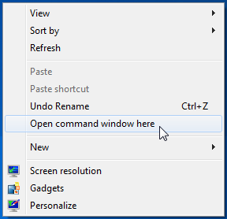

Java Beginners Guide
Welcome to the Utopic Unicorn Java Beginners Guide. This guide is intended for those who are taking an into to computer programming class or who are interested in Java programming. This guide is written so that no Java or programming experience is required and will guide users through the Java JDK installation and writing a first Java program. After finished with this guide users will have:
- 1) Installed the Java Development Kit
- 2) Written a simple Java program
- 3) Compiled and run that same program
Be advised that starting materials are required to complete the whole guide and that warnings in red boxes are concerned with potential problems.
-
This guide will use text instructions and images to guide you though the process.
Warnings are marked in a yellow box
Potential Problems are marked in a red box
Follow each step and navigate using the arrow buttons. You can also jump between steps using the navigation to the left.
Before you begin, You will need:
- Computer with windows 7
- An internet connection
- Administrative privileges
- Open the web browser "Internet Explorer."
-
 Go to the url http://www.oracle.com/technetwork/java/javase/downloads/java-archive-javase8-2177648.html#jdk-8u25-oth-JPR.
Go to the url http://www.oracle.com/technetwork/java/javase/downloads/java-archive-javase8-2177648.html#jdk-8u25-oth-JPR.
-
 Click "Accept License Agreement" under Java SE Development Kit 8u25 section.
Click "Accept License Agreement" under Java SE Development Kit 8u25 section.
-
Click on
jdk-8u25-windows-i586.exefor Windows x86. -
A download box will appear at the bottom of Internet Explorer asking if you want to run or save this file. Click Run.
If you see this image, you do not have the required administrator privileges
- The User Account Control (UAC) warning will appear. Click "Yes" to continue the installation.
-

A setup window will appear. Click the "Next" button twice in the setup window.
Click "Next" for the destination as well.
- Once the installer is finished, close the installer.
-

Open Notepad by holding the "Windows key" on your keyboard, then pushing "R."
When the dialog box opens up, type
notepadand then click "OK". -
Copy the following code into notepad:
class HelloWorld { public static void main(String args[]) { System.out.println("Hello World!"); } } -
 Save the file to the desktop as
Save the file to the desktop as HelloWorld.java.When saving make sure the option for "Save as type" is set to "All Files (*.*)"
If you enteredHelloWorld.javabefore change the type, ensure the name is still correct -  Open command prompt by holding shift and right clicking on the Desktop. Click "Open command window here."
-
 Run the command
Run the command
"C:\Program Files (x86)\Java\jdk1.8.0_25\bin\javac" HelloWorld.javato compile the code. -
 Run the command
Run the command
"C:\Program Files (x86)\Java\jdk1.8.0_25\bin\java" HelloWorldto run the code. -

The end result should be a single line in the terminal that says
Hello World!Congratulations! You have create and ran your first program!